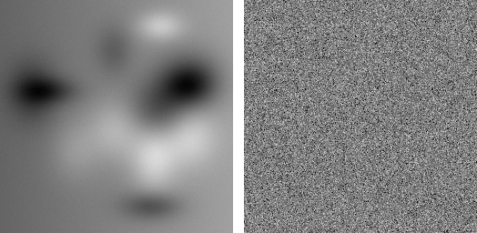
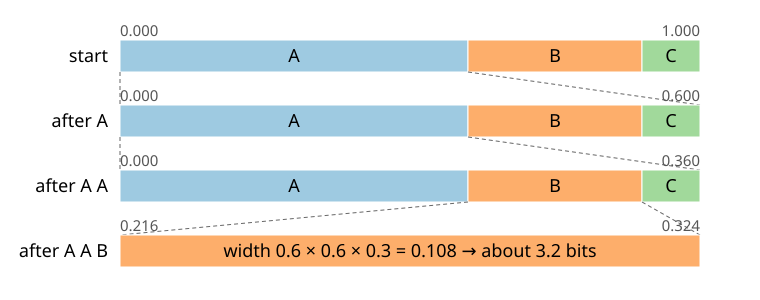

Images are big. How few bits does an image really need, and how do we get close to that number without losing a single pixel value?
Why compress, and the three redundancies a codec can remove: the map for the whole day.
Information of an outcome and entropy of a histogram: the lower bound for a lossless code.
What entropy does not see: neighbours.
Run-length coding, Huffman coding by hand, and the idea of arithmetic coding.
Slides titled The math give the formulas and proofs; the ideas are complete without them.
Why compress?
One camera frame: 2048 × 2048 pixels × 16 bits = 8.4 MB. A time-lapse of z-stacks: 30 slices × 2 channels × 500 time points = about 250 GB.
Lossless compression: the decoded image is exactly the original. Lossy: close enough, by some measure.
Two numbers describe a codec’s size:
compression ratio = original size / compressed size (e.g. 2.5 : 1);
bits per pixel (bpp): compressed bits / number of pixels. An 8-bit image stored raw has 8 bpp.
Compression is only possible because images are not random: some values are more common than others, and neighbours are alike.
Three redundancies: the map of the day
Redundancy
What is wasted
Removed by
Unit
Coding
common values get as many bits as rare ones
entropy codes (Huffman, arithmetic)
this one
Inter-pixel
neighbours are similar, so a pixel is partly known in advance
prediction, transforms, dictionaries
lossless, DCT
Psychovisual
detail the eye (or the analysis) does not need
quantisation
JPEG
Lossless codecs remove only the first two: every pixel value comes back.
Only lossy codecs touch the third, and that is where the danger for measurements lies (last unit of the day).
Information of an outcome
How surprising is an outcome with probability p? Measure it in bits:
I = -\log_2 p
A fair coin comes up heads: p = \tfrac12, 1 bit. One yes/no answer.
One of 256 equally likely grey levels: p = \tfrac1{256}, 8 bits. Exactly what an 8-bit pixel stores.
A fair die shows 6: p = \tfrac16, 2.585 bits: not a whole number, and that is fine.
A pixel of a mostly-white background is white: p = 0.9, only 0.15 bits. A sure thing: 0 bits.
Rare outcomes carry much information, common ones little. A good code gives short code words to common values.
Entropy: the average information
The entropy of a histogram is the information per symbol, averaged over the symbols:
H = -\sum_k p_k \log_2 p_k \quad \text{bits per symbol}
p = (0.4, 0.2, 0.2, 0.1, 0.1): $H = 0.4 + 2 + 2 = $ 2.12 bits, while a fixed-length code for 5 symbols needs 3.
Flat histogram over K values: H = \log_2 K, the largest possible. 256 equal grey levels: 8 bits, nothing to gain.
Constant image: H = 0.
Shannon’s source coding theorem (1948): no lossless code for independent symbols uses fewer than H bits per symbol on average, and codes come arbitrarily close to H.
The math: entropy
For a histogram p_1, \dots, p_K (with 0 \log 0 = 0):
H \ge 0, with equality only if one p_k = 1.
H \le \log_2 K, with equality only for the flat histogram. Proof (Jensen, \log concave): H = \sum_k p_k \log_2 \frac{1}{p_k} \le \log_2 \sum_k p_k \frac{1}{p_k} = \log_2 K.
Gibbs’ inequality: for any other distribution q, -\sum_k p_k \log_2 q_k \ge H; the left side is the cross-entropy. Equality iff q = p.
Source coding theorem: a uniquely decodable code with lengths L_k has \bar L = \sum_k p_k L_k \ge H. With q_k = 2^{-L_k} (Kraft, next math slide) this is Gibbs’ inequality.
What entropy does not see

Left: a smooth synthetic image. Right: the same pixels, shuffled. Same histogram, so the same entropy: 7.08 bits/pixel for both.
But a real compressor that also looks at neighbours (DEFLATE, next unit) stores the left one in 44 457 bytes and the shuffled one in 58 519.
H of the grey-level histogram treats pixels as independent. Neighbours are not: that is the inter-pixel redundancy, and the next two units are about removing it before the entropy coder runs.
Run-length encoding
Replace each run of equal values by (value, length):
Prefix-free: no code word is the start of another (every symbol is a leaf). So a bit string decodes without separators: walk from the root, output a symbol at a leaf, start again.
Ties can be broken either way: a different tree, possibly different lengths (here 1, 2, 3, 4, 4), but the same \bar L = 2.2.
Optimal among codes that give each symbol its own code word: H \le \bar L < H + 1.
The gap matters when one symbol dominates: a mask with 94% black pixels has H = 0.33 bits, but every code word has at least 1 bit. Run lengths, or coding several pixels at once, or arithmetic coding get below 1 bit per pixel.
The math: Kraft and the bounds
Kraft inequality: code word lengths L_k of a prefix code satisfy \sum_k 2^{-L_k} \le 1. (A code word of length L takes 2^{-L} of the leaves of a full binary tree of depth \max L; prefix-free words take disjoint parts.) Conversely, any lengths with \sum 2^{-L_k} \le 1 have a prefix code. A Huffman tree is full: equality.
Lower bound: with q_k = 2^{-L_k}/\sum_j 2^{-L_j}, \bar L = -\sum p_k \log_2 2^{-L_k} \ge -\sum p_k \log_2 q_k \ge H by Gibbs.
Upper bound: the lengths L_k = \lceil -\log_2 p_k \rceil satisfy Kraft, and \bar L < \sum p_k(-\log_2 p_k + 1) = H + 1. Huffman is at least as good.
\bar L = H exactly iff every p_k is a power of \tfrac12 (dyadic).
Coding blocks of n symbols: H \le \bar L_n / n < H + \tfrac1n.
Try it: build a Huffman code
Arithmetic coding: fractional bits
Code the whole message as one number in [0, 1). Each symbol narrows the interval to its share:

Message A A B with p = (0.6, 0.3, 0.1): final width 0.6 \cdot 0.6 \cdot 0.3 = 0.108.
A number in an interval of width w needs about -\log_2 w bits: 3.2 bits= I(A) + I(A) + I(B). Huffman needs 1 + 1 + 2 = 4.
So each symbol costs its own -\log_2 p, even when that is 0.15 bits. Adaptive versions update p as they go; modern codecs (JPEG 2000, JPEG-XL, video) use them.
The math: arithmetic coding
After symbols s_1, \dots, s_n the interval has width w = \prod_i p_{s_i}; its lower end is \sum_i \big(\prod_{j<i} p_{s_j}\big) F(s_i), with F the cumulative probability below s_i.
Any interval of width w contains a binary fraction with \lceil -\log_2 w \rceil + 1 digits whose whole dyadic cell lies inside it, so the code is prefix-free.
Total length \le -\log_2 \prod p_{s_i} + 2 = \sum_i I(s_i) + 2 bits: at most 2 bits above the information of the message, whatever n. Per symbol: \to H as n grows.
In practice: integer arithmetic with renormalisation (output bits as soon as the leading digits agree), and context models that predict p from neighbours.